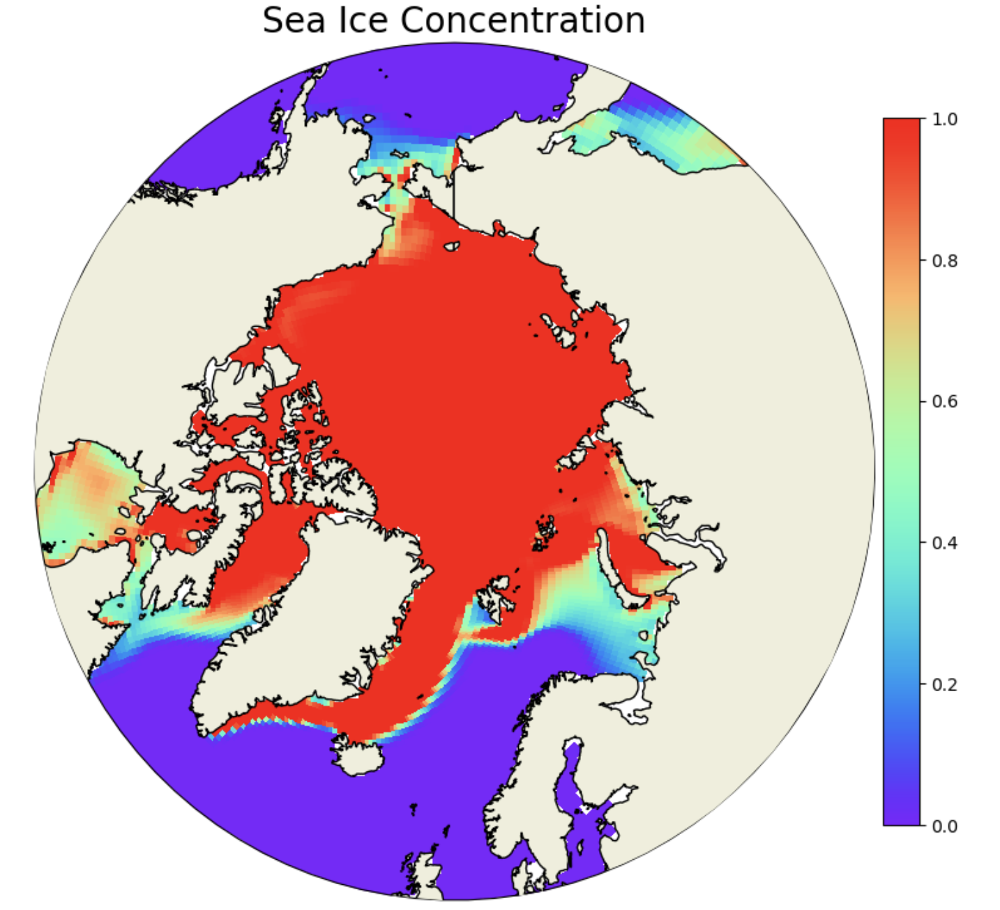
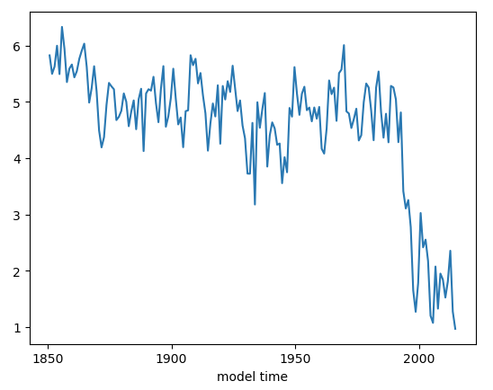
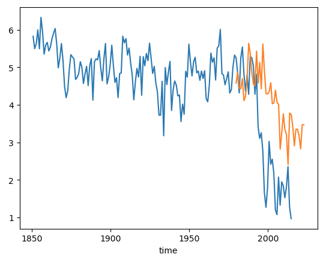
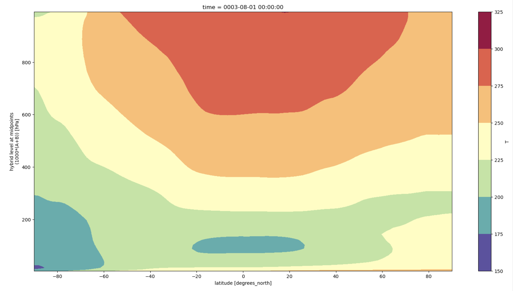
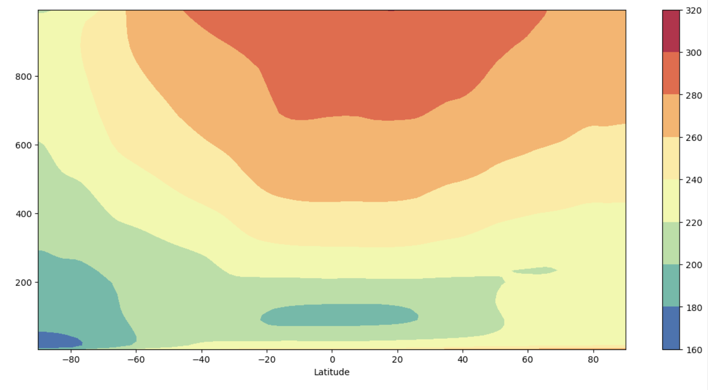
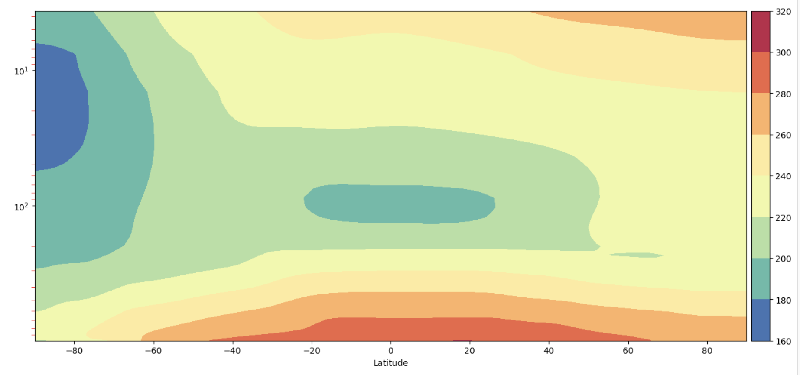
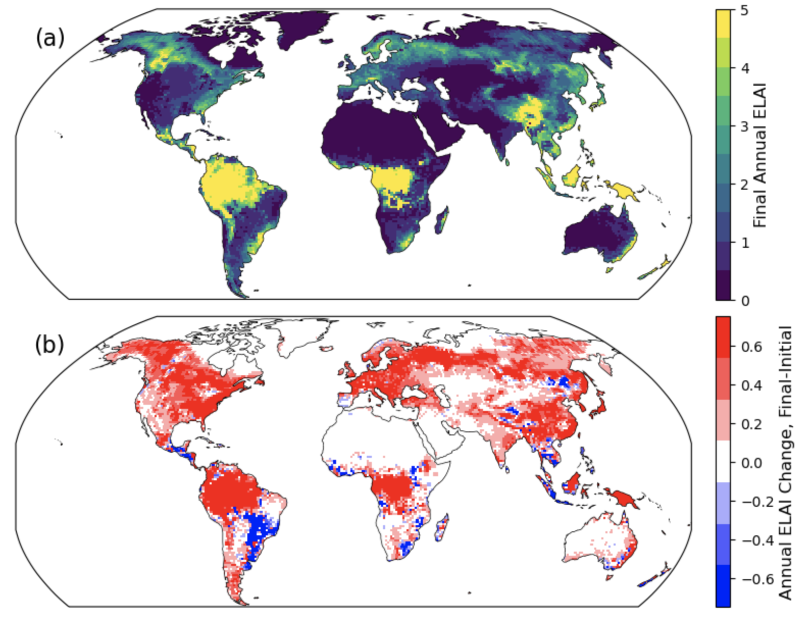

Basic Plotting
Contents
Basic Plotting#
Setting up the notebook#
here we load modules needed for our analysis
use the kernel NPL 2023a, it can be found in the drop down menu on the upper right
# loading modules
# %load_ext watermark # this is so that in the end we can check which module versions we used
%load_ext autoreload
import warnings
warnings.filterwarnings("ignore")
import datetime
import glob
import os
import warnings
import dask
import dask_jobqueue
import distributed
import matplotlib as mpl
import matplotlib.pyplot as plt
import numpy as np
import pandas as pd
import xarray as xr
import xgcm
from matplotlib import ticker, cm
import pop_tools
from cartopy import crs as ccrs, feature as cfeature
import cartopy
Define some functions#
These functions will be used more than once to read data and add a cyclic point. These could go in a package if you like.
# define function to get you the data you want relatively quickly
def read_dat(files, variables, pop=False):
def preprocess(ds):
return ds[variables].reset_coords(drop=True) # reset coords means they are reset as variables
ds = xr.open_mfdataset(files, parallel=True, preprocess=preprocess,
chunks={'time':1, 'nlon': -1, 'nlat':-1},
combine='by_coords')
if pop==True:
file0 = xr.open_dataset(files[0])
ds.update(file0[['ULONG', 'ULAT', 'TLONG', 'TLAT']])
file0.close()
ds
return ds
# define function to be able to plot POP output properly on cartopy projections
def pop_add_cyclic(ds):
nj = ds.TLAT.shape[0]
ni = ds.TLONG.shape[1]
xL = int(ni/2 - 1)
xR = int(xL + ni)
tlon = ds.TLONG.data
tlat = ds.TLAT.data
tlon = np.where(np.greater_equal(tlon, min(tlon[:,0])), tlon-360., tlon)
lon = np.concatenate((tlon, tlon + 360.), 1)
lon = lon[:, xL:xR]
if ni == 320:
lon[367:-3, 0] = lon[367:-3, 0] + 360.
lon = lon - 360.
lon = np.hstack((lon, lon[:, 0:1] + 360.))
if ni == 320:
lon[367:, -1] = lon[367:, -1] - 360.
#-- trick cartopy into doing the right thing:
# it gets confused when the cyclic coords are identical
lon[:, 0] = lon[:, 0] - 1e-8
#-- periodicity
lat = np.concatenate((tlat, tlat), 1)
lat = lat[:, xL:xR]
lat = np.hstack((lat, lat[:,0:1]))
TLAT = xr.DataArray(lat, dims=('nlat', 'nlon'))
TLONG = xr.DataArray(lon, dims=('nlat', 'nlon'))
dso = xr.Dataset({'TLAT': TLAT, 'TLONG': TLONG})
# copy vars
varlist = [v for v in ds.data_vars if v not in ['TLAT', 'TLONG']]
for v in varlist:
v_dims = ds[v].dims
if not ('nlat' in v_dims and 'nlon' in v_dims):
dso[v] = ds[v]
else:
# determine and sort other dimensions
other_dims = set(v_dims) - {'nlat', 'nlon'}
other_dims = tuple([d for d in v_dims if d in other_dims])
lon_dim = ds[v].dims.index('nlon')
field = ds[v].data
field = np.concatenate((field, field), lon_dim)
field = field[..., :, xL:xR]
field = np.concatenate((field, field[..., :, 0:1]), lon_dim)
dso[v] = xr.DataArray(field, dims=other_dims+('nlat', 'nlon'),
attrs=ds[v].attrs)
# copy coords
for v, da in ds.coords.items():
if not ('nlat' in da.dims and 'nlon' in da.dims):
dso = dso.assign_coords(**{v: da})
return dso
Setting up the cluster#
Remember to:
change the project number
potentially change the walltime depending on what you want to do
if "client" in locals():
client.close()
del client
if "cluster" in locals():
cluster.close()
cluster = dask_jobqueue.PBSCluster(
cores=2, # The number of cores you want
memory="23GB", # Amount of memory
processes=1, # How many processes
queue="casper", # The type of queue to utilize (/glade/u/apps/dav/opt/usr/bin/execcasper)
# log_directory="/glade/scratch/deppenme/dask/", # Use your local directory
resource_spec="select=1:ncpus=1:mem=23GB", # Specify resources
project="ncgd0011", # Input your project ID here / THIS WILL BE DIFFERENT FOR YOU
walltime="02:00:00", # Amount of wall time
interface="ib0", # Interface to use
)
# cluster.adapt(maximum_jobs=24, minimum_jobs=2) # If you want to force everything to be quicker, increase the number of minimum jobs,
# # but sometimes then it will take a while until you get them assigned, so it's a trade-off
cluster.scale(12) # I changed this because currently dask is flaky, this might have to be adjusted during the tutorial
client = distributed.Client(cluster)
client
Get the data#
# path to the data
pth = '/glade/scratch/gmarques/archive/gpop.e23.GJRA.TL319/ocn/hist/'
Details on files#
gpop.e23.GJRA.TL319.pop.h.0001-01.nc : one timestep year ???? and month -?? for a number of 2D and 3D variables and constants
gpop.e23.GJRA.TL319.pop.h.nday1.0001-01-01.nc : daily timestep output for one month for SST, SST variance, SSS and (max) mixed layer depth
gpop.e23.GJRA.TL319.pop.h.once.nc : (background) mixing values
gpop.e23.GJRA.TL319.pop.hv.nc: viscosities
%%time
# how quick this is depends among other things on the availability of workers on casper
# you can check progress by clicking on the link for the cluster above which will show you the dask dashboard
flist = glob.glob(pth + 'gpop.e23.GJRA.TL319.pop.h.00??-??.nc') #also might want to use just some years not all
ds_t_shf = read_dat(flist, ['TEMP', 'SHF'], pop=True)
ds_t_shf = ds_t_shf.sortby(ds_t_shf.time)
tlist = np.asarray([time.replace(year=time.year+1957) for time in ds_t_shf.time.values]) # this makes sure the time axis is useful
ds_t_shf['time'] = tlist
ds_t_shf["time"] = ds_t_shf.indexes["time"].to_datetimeindex()
Exercise 1#
Means of global Surface Heat Flux and Sea Surface Temperature
%%time
fig, ax = plt.subplots(1, 2, figsize=(12,3), sharex=True, sharey=True)
ds_t_shf.SHF.mean('time').plot(robust=True, ax=ax[0])
ax[0].set_title(r'Surface Heat Flux [W/m$^2$]')
ds_t_shf.TEMP.sel(z_t=0, method='nearest').mean('time').plot(robust=True, ax=ax[1], levels=np.arange(0,32,1))
ax[1].set_title(r'Sea Surface Temperature [$^{\circ}$C]')
Click here for the solution

Figure: Plotting solution.
Other things to try plotting:
Sea surface height (SSH)
50m temperatures (hint: check out POPs z-axis to and its values)
standard deviations instead of means
Exercise 2#
Lets make some nicer plots! Have you noticed the x and y axes of the plots above? They are indices rather than longitudes and latitudes. POP output is on a curvilinear grid which means that the grid is not regularly (evenly) spaced. TLAT and TLONG are 2D variables depending on these indices, lets have a look at how to make maps.
# learn what TLAT and TLONG look like
fig, ax = plt.subplots(1, 2, figsize=(12,3), sharex=True, sharey=True)
ds_t_shf.TLAT.plot(ax=ax[0], levels=np.arange(-90,95,5))
ax[0].set_title('TLAT')
ds_t_shf.TLONG.plot(ax=ax[1], levels=np.arange(0,370,10))
ax[1].set_title('TLONG')
Click here for the solution

Figure: Plotting solution.
Take a moment to look at the details of the plot above!
Can you see the irregularity in TLAT? What does the discontinuity in TLONG mean?
Make global maps#
# Alice added this from below
ds_t_shf_cyc = pop_add_cyclic(ds_t_shf)
%%time
# initiate the figure
fig = plt.figure(dpi=150, figsize=(12,3))
# add the first subplot
ax_shf = plt.subplot(1, 2, 1, projection=ccrs.Robinson(central_longitude=300.0))
pc = ax_shf.contourf(ds_t_shf.TLONG, ds_t_shf.TLAT, ds_t_shf.SHF.mean('time'),
transform=ccrs.PlateCarree(), cmap='RdYlBu_r', extend='both', levels=np.arange(-120,130,10))
ax_shf.set_global()
land = ax_shf.add_feature(
cartopy.feature.NaturalEarthFeature('physical', 'land', '110m',
linewidth=0.5,
edgecolor='black',
facecolor='darkgray'))
shf_cbar = plt.colorbar(pc, shrink=0.55, ax=ax_shf);
shf_cbar.set_label(r'[W/m$^{2}$]')
ax_shf.set_title('Surface Heat Flux')
# add the second subplot
ax_sst = plt.subplot(1, 2, 2, projection=ccrs.Robinson(central_longitude=300.0))
pc = ax_sst.contourf(ds_t_shf.TLONG, ds_t_shf.TLAT, ds_t_shf.TEMP.isel(z_t=0).mean('time'),
transform=ccrs.PlateCarree(), cmap='RdYlBu_r', extend='both', levels=np.arange(0,31,1))
ax_sst.set_global()
land = ax_sst.add_feature(
cartopy.feature.NaturalEarthFeature('physical', 'land', '110m',
linewidth=0.5,
edgecolor='black',
facecolor='darkgray'))
sst_cbar = plt.colorbar(pc, shrink=0.55, ax=ax_sst);
sst_cbar.set_label(r'[$^{\circ}$C]')
ax_sst.set_title('Sea Surface Temperature')
# plt.savefig('maps_shf_ssf_mean_global.png', bbox_inches='tight') # uncomment this to save your figure
Click here for the solution

Figure: Plotting solution.
Make regional maps#
# define the extent of the map
lonW = -140
lonE = -40
latS = 15
latN = 65
cLat = (latN + latS) / 2
cLon = (lonW + lonE) / 2
res = '110m'
# what does sea surface temperature around the US look like? (i.e. where would you like to go swimming..)
fig = plt.figure(figsize=(11, 8.5))
ax = plt.subplot(1, 1, 1, projection=ccrs.PlateCarree())
ax.set_title('')
gl = ax.gridlines(
draw_labels=True, linewidth=2, color='gray', alpha=0.5, linestyle='--'
)
ax.set_extent([lonW, lonE, latS, latN], crs=ccrs.PlateCarree())
ax.coastlines(resolution=res, color='black')
ax.add_feature(cfeature.STATES, linewidth=0.3, edgecolor='brown')
ax.add_feature(cfeature.BORDERS, linewidth=0.5, edgecolor='blue');
tdat = ax.pcolormesh(ds_t_shf.TLONG, ds_t_shf.TLAT, ds_t_shf.TEMP.isel(z_t=0, time=10), cmap='RdYlBu_r')
plt.colorbar(tdat, ax=ax, shrink=0.5, pad=0.1)
Click here for the solution

Figure: Plotting solution.
Maybe ocean variables over the USA are not the best idea.. so lets look at another region
The Pacific for starters
# define the extent of the map
lonW = -180
lonE = -60
latS = -30
latN = 30
cLat = (latN + latS) / 2
cLon = (lonW + lonE) / 2
res = '110m'
fig = plt.figure(figsize=(11, 8.5))
ax = plt.subplot(1, 1, 1, projection=ccrs.PlateCarree())
ax.set_title('SST')
gl = ax.gridlines(
draw_labels=True, linewidth=2, color='gray', alpha=0.5, linestyle='--'
)
ax.set_extent([lonW, lonE, latS, latN], crs=ccrs.PlateCarree())
ax.coastlines(resolution=res, color='black')
ax.add_feature(cfeature.STATES, linewidth=0.3, edgecolor='brown')
ax.add_feature(cfeature.BORDERS, linewidth=0.5, edgecolor='blue');
tdat = ax.pcolormesh(ds_t_shf.TLONG, ds_t_shf.TLAT, ds_t_shf.TEMP.isel(z_t=0, time=10), cmap='RdYlBu_r', vmin=15, vmax=31)
cbar = plt.colorbar(tdat, ax=ax, shrink=0.5, pad=0.1, ticks=np.arange(15,35,5))
cbar.set_label(r'[$^{\circ}$C]')
Click here for the solution

Figure: Plotting solution.
Things to try plotting
Try looking at the Gulf of Maine, Gulf of Mexico, the California coast.. any region that interests you!
Try a different variable like 50m temperature or sea surface height.
Cyclical for contourf#
you need to make your dataset cyclical to be able to correctly contour(fill) your data (test with the above and compare to the below!)
ds_t_shf_cyc = pop_add_cyclic(ds_t_shf)
# define the extent of the map
lonW = -60
lonE = 20
latS = -30
latN = 30
cLat = (latN + latS) / 2
cLon = (lonW + lonE) / 2
res = '110m'
fig = plt.figure(figsize=(11, 8.5))
ax = plt.subplot(1, 1, 1, projection=ccrs.PlateCarree())
ax.set_title('SST')
gl = ax.gridlines(
draw_labels=True, linewidth=2, color='gray', alpha=0.5, linestyle='--'
)
ax.set_extent([lonW, lonE, latS, latN], crs=ccrs.PlateCarree())
ax.coastlines(resolution=res, color='black')
ax.stock_img() # something else than the boarders for a change
tdat = ax.contourf(ds_t_shf_cyc.TLONG, ds_t_shf_cyc.TLAT, ds_t_shf_cyc.TEMP.isel(z_t=0, time=10), cmap='RdYlBu_r', levels=np.arange(10,31,1))
cbar = plt.colorbar(tdat, ax=ax, shrink=0.5, pad=0.1, ticks=np.arange(15,35,5))
cbar.set_label(r'[$^{\circ}$C]')
Click here for the solution

Figure: Plotting solution.
Exercise 3#
The difficulty here is that you cant easily select your lat and lon location, you need to find the nlon and nlat index first. As you could see from the TLAT and TLONG plots above, they dont behave regularly, so this is a bit of a challenge. Lets start with the equator (which is a bit easier than high up north).
# find the latitude that is the smallest, i.e. closest to the equator:
abs(ds_t_shf.TLAT).argmin(dim='nlat')
This shows you that the equator is not the same everywhere but it is within one index and so might be just on the south or north of the equator, you can choose either. (there is no latitude where lat=0, can you imagine why?)
# so let's say
ind_eq = 180
Lets now find some location we might be interested in, say 140\(^{\circ}\)W
ds_t_shf.TLONG.isel(nlat=ind_eq).plot()
Click here for the solution

Figure: Plotting solution.
# the longitude goes from 0-360, so if we want 140W which is -140 we would need to select 220
ind_140w = abs(ds_t_shf.TLONG.isel(nlat=ind_eq)-220).argmin()
First plot#
fig, ax = plt.subplots(2, 1, figsize=(9,3))
ds_t_shf.TEMP.isel(nlon=ind_140w, nlat=ind_eq).plot(y='z_t', ax=ax[0], ylim=(250e2,0), levels=np.arange(10,32,2), cmap='RdYlBu_r')
ds_t_shf.TEMP.isel(nlon=ind_140w, nlat=ind_eq).plot(y='z_t', ax=ax[1], ylim=(5000e2,0), levels=np.arange(0,10.2,0.2), cmap='Blues')
Click here for the solution

Figure: Plotting solution.
Make a nicer plot#
fig, (ax_upper, ax_lower) = plt.subplots(2, 1, gridspec_kw={'height_ratios': [1, 3]}, sharex=True)
dat_upper = ax_upper.contourf(ds_t_shf.time, ds_t_shf.z_t/100, ds_t_shf.TEMP.isel(nlon=ind_140w, nlat=ind_eq).T,
levels=np.arange(10,32,1), cmap='RdYlBu_r', extend='both')
ax_upper.set_ylim(300,0)
plt.colorbar(dat_upper, ax=ax_upper)
dat_lower = ax_lower.contourf(ds_t_shf.time, ds_t_shf.z_t/100, ds_t_shf.TEMP.isel(nlon=ind_140w, nlat=ind_eq).T, levels=np.arange(0,10.5,0.5), cmap='Blues',
extend='both')
ax_lower.set_ylim(4000,300)
plt.colorbar(dat_lower, ax=ax_lower, shrink=0.7)
Click here for the solution

Figure: Plotting solution.
Exercise 4#
%%time
# let's load these calculated quantities so that we don't have to calculate them time and time again
t_0n140w_mean = ds_t_shf.TEMP.isel(nlon=ind_140w, nlat=ind_eq).mean('time').load()
t_0n140w_std = ds_t_shf.TEMP.isel(nlon=ind_140w, nlat=ind_eq).std('time').load()
# plot the mean profile
t_0n140w_mean.plot(y='z_t', ylim=(300e2,0), label='mean')
plt.xlim(10,28)
plt.title('T at 0$^{\circ}$N, 140$^{\circ}$W')
# let's add some error bars --> standard deviation
plt.fill_betweenx(ds_t_shf.z_t, t_0n140w_mean-t_0n140w_std, t_0n140w_mean+t_0n140w_std, color='black', alpha=0.2, edgecolor=None, label='std')
plt.legend()
Click here for the solution

Figure: Plotting solution.